1056B multi-point injection system (mpi)
- Path
- Descriptions > 10 ENGINE > 1056 PETROL INJECTION SYSTEM > 1056B multi-point injection system (mpi)
- Kind
- system description
- Applies to
- engines: 1.6 TS , 1.8 TS, 2.5 V6, 3.2 V6; all production periods
- Interactive page
- https://sloeber94.github.io/elrnDB-a156/en/#/3232842
Applies to: engines: 1.6 TS ; all production periods
General view
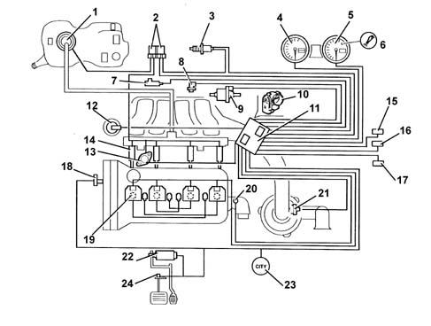
1, Electric fuel pump 2, Relays 3, Lambda sensor 4, Speedometer 5, Rev counter 6, Engine Check warning light 7, Detonation sensor 8, Rpm sensor 9, Fuel vapour recirculation solenoid valve 10, Butterfly casing integrated with M.D.S. 11, Injection/ignition control unit 12, Inlet manifold solenoid valve (only 1.8/2.0 T. SPARK) 13, Phase transformer 14, Injectors 15, Climate control connector 16, Diagnostic connector 17, Alfa Romeo CODE connector 18, Timing sensor 19, Ignition coils 20, Coolant temperature sensor 21, Debimeter with integral air temperature sensor
M1.5.5 fuel injection-ignition control unit
The control unit is mounted on the throttle body and withstands high temperatures.
The control unit's memory is "flash EPROM", i.e. reprogrammable from the outside without intervening on the hardware.
The adoption of the Alfa Romeo CODE does not allow control units to be exchanged between cars.
Pin-out
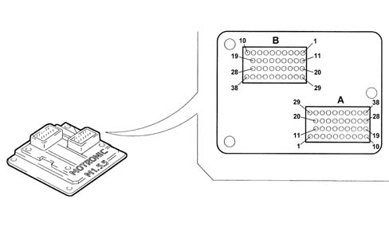
A1, Flow meter sensor supply
A2, Rev counter signal
A3, Fuel pump relay feed
A4, Cooling fan 2nd speed contactor control
A5, N.C.
A6, N.C.
A7, Main relay feed
A8, Supply controlled by the ignition
A9, Main relay feed
A10, N.C.
A11, Diagnostic connection (K line)
A12, Check Engine warning light
A13, Cooling fan 1st speed contactor control
A14, N.C.
A15, N.C.
A16, Alfa Romeo CODE connection
A17, Supply (main relay)
A18, Direct supply (battery)
A19, Air conditioner compressor relay feed
A20, Flow meter signal
A21, N.C.
A22, N.C.
A23, N.C.
A24, N.C.
A25, N.C.
A26, N.C.
A27, Speedometer sensor signal
A28, N.C.
A29, Sensor earth
A30, Air temperature sensor signal
A31, Air conditioning request switch
A32, N.C.
A33, N.C.
A34, Request to switch on fan 1st speed
A35, Request to switch on fan 2nd speed
A36, N.C.
A37, N.C.
A38, N.C.
B1, Sensor earth
B2, Detonation sensor signal
B3, N.C.
B4, Throttle position potentiometer signal
B5, Coolant temperature sensor signal
B6, Fuel injector control cyl. 1
B7, Operation of injector for cyl. 4
B8, Lambda sensor heating signal
B9, N.C.
B10, Operation of ignition coil for cyl. 2
B11, Detonation sensor signal
B12, N.C.
B13, Throttle potentiometer signal
B14, N.C.
B15, Idle switch signal
B16, Operation of injector for cyl. 3
B17, Operation of injector for cyl. 2
B18, Operation of ignition coil for cyl. 3
B19, N.C.
B20, N.C.
B21, Lambda sensor reference earth
B22, Engine rpm signal
B23, Timing sensor signal
B24, Operation of phase transformer actuator
B25, N.C.
B26, Throttle actuator control
B27, N.C.
B28, N.C.
B29, Sensor supplies
B30, Lambda sensor
B31, N.C.
B32, Engine rpm sensor
B33, Modular inlet manifold solenoid control
B34, Fuel vapour recovery solenoid control
B35, Throttle actuator control
B36, N.C.
B37, Operation of ignition coil for cyl. 2
B38, Operation of ignition coil for cyl. 1
Injectors
The double-jet fuel injectors are installed on the distribution manifold.
A retainer secures the fuel injectors to the distribution manifold, and two O-rings ensure the seal.
The fuel injectors are responsible for delivering the necessary quantity of fuel to the engine.
They are "all or nothing" devices, as they can remain in only two stable states, i.e. open or closed. They allow fuel to pass when they are open, while they block delivery when they are closed.
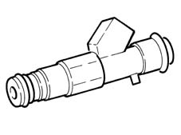
Engine coolant temperature sensor
This is mounted on the thermostatic cup, and it measures the coolant temperature by means of an NTC thermistor with a negative resistance coefficient.
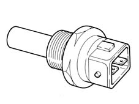
The sensor is made using semiconductor technology, so if the sensor temperature increases as the coolant temperature increases, its resistive value decreases.
As the variation in resistance is not linear, for the same temperature increment, it is higher for low temperatures than for high temperatures.
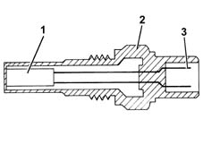
1, NTC resistor 2, Sensor body 3, Supply connector
For operating checks. 1056B multi-point injection system (mpi)
In post-modification a single "twin NTC" type engine coolant temperature sensor is fitted on the thermostat which combines the function of a sender unit for the M1.5.5 control unit and the warning light in the instrument panel.
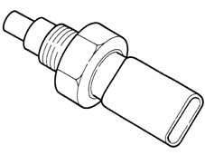
Detonation sensor
The piezoelectric knock sensor is mounted on the engine block, and it detects the intensity of vibrations caused by knocking in the combustion chambers.
The piezoelectric crystal forming the sensor detects the vibrations generated at a frequency of between 12 and 16 kHz, and transforms them into electrical signals sent to the fuel injection control unit.
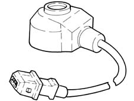
Rpm sensor
It is mounted on the engine block and "faces" the phonic wheel located on the crankshaft.
It is of the inductive type, i.e. it functions by means of the variation in the magnetic field generated by the passage of the teeth of the phonic wheel (60-2 teeth).
The fuel injection control unit uses the rpm sensor to:
- determine the speed of rotation
- determine the angle of the crankshaft.
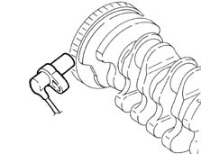
Operation
The passage from full to empty, due to the presence or absence of the tooth, causes a variation in the magnetic flow which is sufficient to generate an induced alternating voltage, resulting from the count of teeth located on a ring (or phonic wheel).
The frequency and range of the voltage sent to the electronic control unit provides it with the angular crankshaft speed.
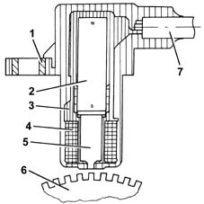
1, Brass bush 2, Permanent magnet 3, Plastic sensor casing 4, Coil winding 5, Polar core 6, Toothed or phonic wheel 7, Coaxial two-wire cable or electrical connection
The specified gap for obtaining correct signals, between the end of the sensor and the phonic wheel, must be between 0.8 and 1.5 mm.
This gap is not adjustable, so if a value outside the tolerance range is measured, check the condition of the sensor and the phonic wheel.
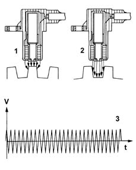
1, Maximum magnetic flow 2, Minimum magnetic flow 3, Trend of induced alternating voltage
For operating checks. 1056B multi-point injection system (mpi)
Timing sensor
Hall effect; it is mounted on the cylinder head and "facing" the exhaust camshaft pulley.
This pulley comprises a gap which enables the timing sensor to indicate the engine's timing position.
The fuel injection control unit uses the timing sensor's signal to find out the TDC at the end of compression.
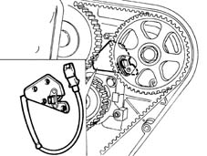
THROTTLE BODY INTEGRAL WITH M.D.S.
The M.D.S. actuator is fitted on the throttle body and is controlled by the fuel injection control unit.
It consists of a DC motor which regulates the throttle aperture between 0° and 15°.
Two potentiometers are built into the actuator; these transmit to the fuel injection unit the following angle positions:
- 0°-15° for the idle speed
- 0°-83° for the other rpm values.
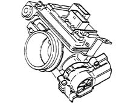
Air flow meter
The flow meter is located on the air inlet duct and is of the "hot film" type.
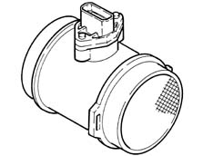
The intake air temperature sensor is built into the flow meter.
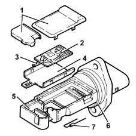
1, Covers 2, Electronic card 3, Sensor 4, Support plate 5, Support 6, O-ring 7, Temperature sensor
Operation
The principle of operation is based on a heated diaphragm located in a measuring duct through which the intake air entering the engine flows.
The hot film diaphragm is kept at a constant temperature (about 120° C above the incoming air temperature) by the heating resistor.
The air mass passing through the measuring duct tends to draw heat from the diaphragm, so to keep the latter at a constant temperature, some current must flow through the resistor.
This current is measured by a suitable Wheatstone bridge.
The current is therefore proportional to the mass of flowing air.
The flow meter directly measures the air mass (not volume), thus eliminating problems of temperature, altitude, pressure, etc.
For operating checks. 1056B multi-point injection system (mpi)
Applies to: engines: 1.6 TS ; all production periods; only with equipment: Euro 3
CONSTRUCTION FEATURES
VIEW OF ASSEMBLY
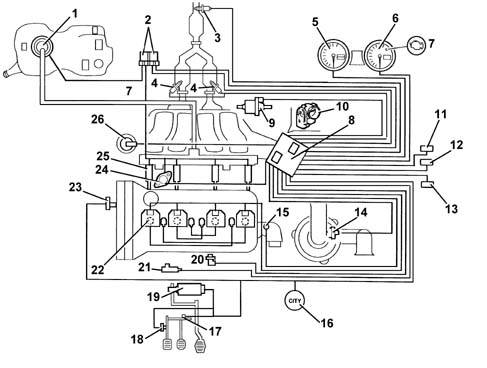
1, Electric fuel pump 2, Relays 3, Lambda sensor downstream of catalyzer 4, Lambda sensor upstream of pre-catalyzer 5, Speedometer 6, Rev counter 7, Injection warning light 8, Injection - ignition control unit 9, Fuel vapour recirculation solenoid valve 10, Throttle body integral with D.V.E. 11, Climate control connector 12, Diagnostic connector 13, Alfa Romeo CODE connector 14, Air flow meter with air temperature sensor 15, Coolant temperature sensor 16, City (Selespeed version only) 17, Brake pedal dual switch 18, Clutch pedal switch 19, Accelerator pedal potentiometer 20, Rpm sensor 21, Detonation sensor 22, Ignition coils 23, Timing sensor 254 Variable valve timing 25, Injectors 26, Modular intake manifold solenoid valve (excluding 1.6 version)
ME7.3.1 injection/ignition control unit
The control unit is mounted in the engine bay over the throttle body and withstands high temperatures.
The control unit memory is the 'flash EPROM' type, i.e. reprogrammable from the outside without intervening on the hardware.
Replacement of the injection control unit, air capacity case or the throttle body integral with the D.V.E. means that the self-learning procedure has to be carried out.
PIN-OUT
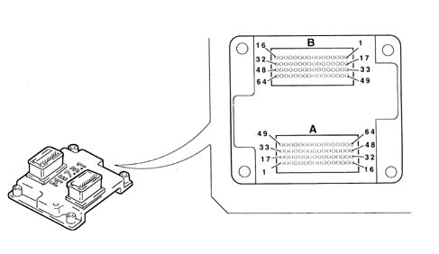
A1, Not connected A2, Not connected A3, Alfa Romeo CODE connection A4, Not connected A5, Not connected A6, Compressor engagement request A7, Power supply for accelerator pedal potentiometer A8, Signal for potentiometer - 1 accelerator pedal A9, Quadrinary - Fan 1st speed request A10, Cruise Control ON/OFF A11, Not connected A12, CAN-L line A13, Compressor relay control A14, Not connected A15, Direct supply A16, Supply controlled by ignition, via main relay A17, Not connected A18, Cruise Control warning light A19, Injection warning light A20, Preparation for Flash Programming A21, Not connected A22, Fuel level sensor A23, Not connected A24, Earth for potentiometer - 1 accelerator pedal A25, Earth for potentiometer - 2 accelerator pedal A26, Brake lights switch A27, Brake lights switch A28, SPORT function switch A29, CAN-H line A31, Fuel pump relay feed A31, Main relay activation A32, Supply controlled by ignition, via main relay A33, Not connected A34, Not connected A35, Rev counter signal A36, Not connected A37, Not connected A38, Not connected A39, Not connected A40, Signal for potentiometer - 2 accelerator pedal A41, Quadrinary - fan 2nd speed request A42, Cruise Control Resume A43, Cruise Control SET + A44, Speedometer sensor signal A45, CAN-H line A46, Injection warning light A47, Supply controlled by ignition A48, Supply controlled by ignition, via main relay A49, Not connected A50, Operation of fan 1st speed A51, Not connected A52, Fuel consumption signal A53, Diagnostic connection (K line) A54, Air temperature sensor signal A55, Not connected A56, Supply for accelerator pedal potentiometer A57, Air flow meter signal A58, Cruise Control SET - A59, Clutch pedal switch A60, Oil pressure switch A61, CAN-L line A62, Operation of fan 2nd speed A63, Air flow meter supply A64, Not connected B1, Throttle casing motor earth B2, Lambda sensor heater (pre-cat. left) B3, Operation of injector for cyl. 4 B4, Variable geometry solenoid valve operation B5, Fuel vapour recovery solenoid control B6, Detonation sensor 2 reference earth B7, Lambda sensor earth (pre-cat. left) B8, Not connected B9, Not connected B10, Engine rpm sensor B11, Not connected B12, Not connected B13, Not connected B14, Cylinder 4 coil operation B15, Not connected B16, Cylinder 1 coil operation B17, Throttle casing motor supply B18, Not connected B19, Operation of injector for cyl. relay B20, Not connected B21, Not connected B22, Detonation sensor 1 B23, Lambda sensor signal (pre-cat. right) B24, Potentiometer - 1 throttle body B25, Engine coolant temperature B26, Sensors reference earth B27, Not connected B28, Lambda sensor signal (post-cat.) B29, Not connected B30, Cylinder 3 coil operation B31, Cylinder 2 coil operation B32, Not connected B33, Throttle casing motor earth B34, Lambda sensor heater (pre-cat. right) B35, Operation of injector for cyl. 3 B36, Phase transformer operation B37, Not connected B38, Not connected B39, Lambda sensor signal (pre-cat. left) B40, Potentiometer - 2 throttle body B41, Not connected B42, Timing sensor signal B43, Not connected B44, Not connected B45, Not connected B46, Not connected B47, Not connected B48, Not connected B49, Throttle casing motor supply B50, Lambda sensor heater (post-cat.) B51, Timing sensor power supply B52, Operation of injector for cyl. relay B53, Not connected B54, Detonation sensor 1 reference earth B55, Lambda sensor earth (pre-cat. right) B56, Not connected B57, Not connected B58, Throttle casing potentiometers supply B59, Engine rpm sensor B60, Lambda sensor earth (post-cat.) B61, Not connected B62, Not connected B63, Not connected B64, Not connected
Applies to: engines: 1.6 TS ; all production periods
General view
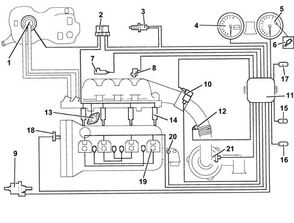
1, Electric fuel pump 2, Relays 3, Lambda sensor 4, Speedometer 5, Rev counter 6, Engine Check warning light 7, Detonation sensor 8, Rpm sensor 9, Fuel vapour recirculation solenoid valve 10, Idle speed actuator 11, Injection/ignition control unit 12, Air temperature sensor 13, Phase transformer 14, Injectors 15, Climate control connector 16, Diagnostic connector 17, Alfa Romeo CODE connector 18, Timing sensor 19, Ignition coils 20, Coolant temperature sensor 21, Air flow meter
M2.10.4 fuel injection-ignition control unit
The control unit is mounted in the interior compartment on the passenger side panel.
The adoption of the Alfa Romeo CODE does not allow control units to be exchanged between cars.
Pin-out
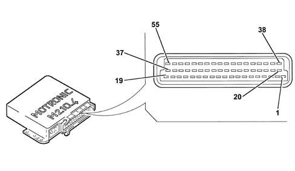
1, Operation of ignition coil for cyl. 1 and 4 2, Ignition earth 3, Petrol pump contactor control 4, Constant idle speed actuator control - open 5, Evaporative solenoid control 6, Rev counter signal 7, Air flow meter signal 8, Engine timing signal 9, Speedometer signal 10, Lambda probe earth 11, Engine knock signal 12, Stabilized voltage (5V) for sensors 13, N.C. 14, Earth for fuel injectors 15, N.C. 16, Fuel injector control cyl. 3 17, Fuel injector control cyl. 1 18, Direct supply 19, Electronic shielding earth 20, Ignition coil control - cyl. 3 and 2 21, Ignition coil control - cyl. 4 and 1 22, Constant idle speed actuator control - close 23, N.C. 24, Earth for final stages 25, Operation of cooling fan 2 nd speed 26, Operation of cooling fan 1 st speed 27, "Ignition-dependent" supply 28, Oxygen quantity signal 29, N.C. 30, Electronic earth for sensors 31, N.C. 32, Air conditioner compressor relay control 33, N.C. 34, Fuel injector control cyl. 2 35, Fuel injector control cyl. 4 36, Main contactor control 38, Ignition coil control cyl. 2 and 3 39, N.C. 40, Request to switch on compressor 41, N.C. 42, N.C. 43, Request to switch on cooling fan 2 nd speed 44, Request to switch on cooling fan 1 st speed 45, Coolant temperature signal 46, N.C. 47, Connection to Alfa Romeo CODE 48, Rpm and TDC signal 49, Rpm and TDC signal 50, N.C. 51, "Engine check" warning light control 52, Timing variator control 53, Throttle valve position signal 54, Intake air temperature signal 55, Diagnostic connection (K line)
Injectors
The single-jet fuel injectors are installed on the distribution manifold and are pressed by the manifold itself into their respective seats in the inlet ducts.
A retainer secures the fuel injector to the distribution manifold, and two O-rings ensure the seal.
The fuel injectors are responsible for delivering the necessary quantity of fuel to the engine.
They are "all or nothing" devices, as they can remain in only two stable states, i.e. open or closed. They allow fuel to pass when they are open, while they block delivery when they are closed.
Operation
They basically consist of a nozzle controlled by a solenoid and a return spring (4).
In the rest position, the pintle (2), which is joined to the core (3), is pushed by the spring onto the injector nose (6), thus closing the hole, ensuring a seal and preventing the unrequired emergence of fuel.
As soon as the winding (5) is energized, the core is attracted, and it compresses the spring thus opening the hole of the nozzle and allowing fuel to emerge.
Considering the physical characteristics of the fuel (viscosity, density) and the pressure drop (via the pressure regulator) to be constant, the quantity of fuel injected depends only on the fuel injector opening time.
The winding energization time is normally indicated as "fuel injection time".
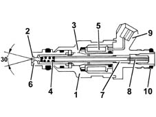
1, Injector body 2, Pintle 3, Magnetic core 4, Coil spring 5, Winding 6, Injector nose 7, Adjustable spring pusher 8, Filter 9, Electrical connection 10, Seal
For operating checks see test 1056B multi-point injection system (mpi) .
Applies to: engines: 1.6 TS ; all production periods
Engine coolant temperature sensor
Refer 1056B multi-point injection system (mpi)
Detonation sensor
Refer 1056B multi-point injection system (mpi)
Rpm sensor
Refer 1056B multi-point injection system (mpi)
Timing sensor
Applies to: engines: 1.6 TS ; all production periods
Idle speed actuator
The idle speed is controlled by means of an actuator mounted on the throttle body.
It regulates the quantity of air drawn in by the engine, when the throttle valve is home.
A double electromagnetic circuit ensures that the open and close controls are independent, with the advantage of very prompt adjustment.
In the event of a fault, a spring brings the actuator to an intermediate position of aperture, to allow the car to reach an authorized Service Centre.
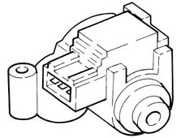
For operating checks see test 1056B multi-point injection system (mpi) .
Air flow meter
The flow meter is located on the air inlet duct and is of the "hot film" type.
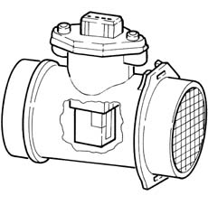
Operation
The principle of operation is based on a heated diaphragm located in a measuring duct through which the intake air entering the engine flows.
The hot film diaphragm is kept at a constant temperature (about 120° C above the incoming air temperature) by the heating resistor.
The air mass passing through the measuring duct tends to draw heat from the diaphragm, so to keep the latter at a constant temperature, some current must flow through the resistor.
This current is measured by a suitable Wheatstone bridge.
The current is therefore proportional to the mass of flowing air.
The flow meter directly measures the air mass (not volume), thus eliminating problems of temperature, altitude, pressure, etc.
For operating checks see test 1056B multi-point injection system (mpi) .
Intake air temperature sensor
The intake air temperature sensor is mounted on the inlet duct.
It measures the air temperature by means of an NTC (negative resistance coefficient) thermistor, which reduces the resistance as the temperature increases.
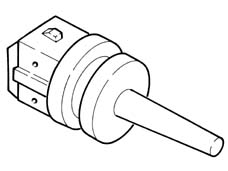
For operating checks see test 1056B multi-point injection system (mpi) .
Throttle position switch
Mounted on the throttle body, its moving part is controlled directly by the throttle spindle.
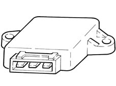
For operating checks see test 1056B multi-point injection system (mpi) .
Applies to: engines: 2.5 V6; all production periods
VIEW OF ASSEMBLY
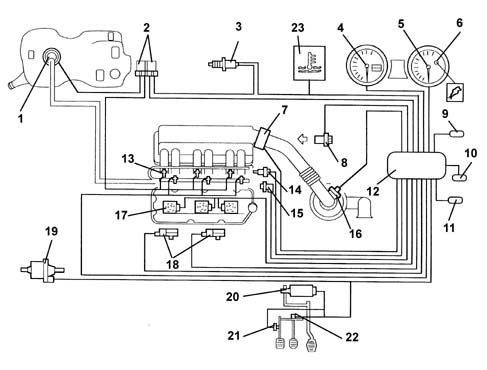
1, Electric fuel pump 2, Relays 3, Lambda probe (two stereo lambda probes for automatic transmission version) 4, Speedometer 5, Rev counter 6, Engine Check warning light 7, Throttle body integrated with D.V.E. 8, Timing sensor 9, Climate control connector 10, Diagnostic connector 11, Alfa Romeo CODE connector 12, Injection/ignition control unit 13, Injectors 14, Coolant temperature sensor 15, Rpm sensor 16, Air flow meter 17, Ignition coils 18, Detonation sensors 19, Fuel vapour recirculation solenoid valve 20, Accelerator pedal potentiometer (only for version with manual gearbox) 21, Clutch pedal switch 22, Brake pedal switch 23, Coolant temperature indicator warning light
ME2.1 injection/ignition control unit
The control unit is mounted in the interior compartment on the passenger side panel.
The control unit's memory is "flash EPROM", i.e. reprogrammable from the outside without intervening on the hardware.
The replacement of the injection control unit or throttle body actuator means that the self-learning procedure has to be carried out:
- ignition turned on for 30 seconds
- remove key for 5 seconds
- Start the engine.
PIN-OUT
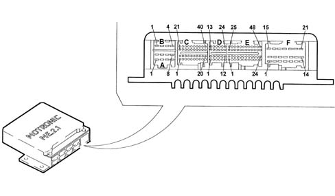
A-1, Lambase sensor 2 heater (only for automatic transmission version) A-2, Supply A-3, Ignition earth A-4, N.C. A-5, Lambda sensor heater A-6, Relay for 1 st fan speed A-7, Ignition earth A-8, Electronic earth (for sensors) B-1, N.C. B-2, N.C. B-3, Programming B-4, Battery from C-1 to C-20, N.C. C-21, Fuel vapour recovery solenoid valve C-22, Supply for potentiometer - 1 accelerator pedal C-23, Earth for potentiometer - 1 accelerator pedal C-24, Signal for potentiometer - 1 accelerator pedal C-25, Signal for potentiometer - 2 accelerator pedal C-26, Earth for potentiometer - 2 accelerator pedal C-27, Supply for potentiometer - 2 accelerator pedal C-28, N.C. C-29, Fuel pump relay C-30, N.C. C-31, Lambda sensor earth C-32, Lambda sensor signal C-33, Lambda 2 probe signal (only for versions with automatic transmission) C-34, Lambda 2 probe earth (only for versions with automatic transmission) from C-35 to C-37, N.C. C-38, Rpm signal C-39, Diagnostic connection (line K) C-40, N.C. D-1, N.C. D-2, N.C. D-3, Relay for cooling fan 2 nd speed from D-4 to D-10, N.C. D-11, CAN line "high" D-12, CAN line "low" D-13, Speedometer signal D-14, Brake lights switch from D-15 to D-16, N.C. D-17, Automatic transmission recognition D-18, N.C. D-19, Clutch pedal switch from D-20 to D-24, N.C. E-1, Operation of injector for cyl. 3 E-2, Operation of injector for cyl. 6 E-3, N.C. E-4, Air conditioning compressore relay feed from E-5 to E-12, N.C. E-13, Operation of injector for cyl. 2 E-14, Operation of injector for cyl. 5 E-15, Request to engage 1st fan speed E-16, N.C. E17, Request to engage 2nd fan speed from E-18 to E-20, N.C. E-21, Air conditioning request switch E-22, N.C. E-23, N.C. E-24, N.C. E-25, Operation of injector for cyl. 1 E-26, Operation of injector for cyl. 4 E-27, N.C. E-28, Coolant temperature sensor earth E-29, Coolant temperature sensor signal E-30, N.C. E-31, Potentiometer - 1 butterfly casing E-32, Earth for potentiometer 1-2 butterfly casing E-33, Supply for potentiometer 1-2 butterfly casing E-34, Potentiometer - 2 butterfly casing E-35, N.C. E-36, N.C. E-37, Rpm sensor (-) E-38, Rpm sensor (+) E-39 Timing sensor earths E-40, Timing sensor signal E-41, Earth for detonation sensor 1 (cylinders 1-4-5) E-42, Signal for detonation sensor 1 E-43, Earth for detonation sensor 2 (cylinders 2-3-6) E-44, Signal for detonation sensor 2 E-45, Air temperature sensor E-46, Flow meter - reference voltage 5V E-47, Output voltage (signal) - flow meter E-48, Earth - flow meter F-1, Throttle body motor integrated with D.V.E. F-2, Throttle body motor integrated with D.V.E. F-3, N.C. F-4, N.C. F-5, Operation of ignition coil for cyl. 6 F-6, Operation of ignition coil for cyl. 2 F-7, N.C. F-8, Earth from F-9 to F-12, N.C. F-13, Operation of ignition coil for cyl. 4 F-14, N.C. F-15, N.C. F-16, N.C. F-17, Operation of ignition coil for cyl. 3 F-18, N.C. F-19, Operation of ignition coil for cyl. 5 F-20, Operation of ignition coil for cyl. 1 F-21, Operation of injection warning light
Injectors
The single-jet fuel injectors are installed on the distribution manifold and are pressed by the manifold itself into their respective seats in the inlet ducts.
A retainer secures the fuel injector to the distribution manifold, and two O-rings ensure the seal.
The fuel injectors are responsible for delivering the necessary quantity of fuel to the engine.
They are "all or nothing" devices, as they can remain in only two stable states, i.e. open or closed. They allow fuel to pass when they are open, while they block delivery when they are closed.
Operation
They basically consist of a nozzle controlled by a solenoid and a return spring (4).
In the rest position, the pintle (2), which is joined to the core (3), is pushed by the spring onto the injector nose (6), thus closing the hole, ensuring a seal and preventing the unrequired emergence of fuel.
As soon as the winding (5) is energized, the core is attracted, and it compresses the spring thus opening the hole of the nozzle and allowing fuel to emerge.
Considering the physical characteristics of the fuel (viscosity, density) and the pressure drop (via the pressure regulator) to be constant, the quantity of fuel injected depends only on the fuel injector opening time.
The winding energization time is normally indicated as "fuel injection time".
1, Injector body 2, Pintle 3, Magnetic core 4, Coil spring 5, Winding 6, Injector nose 7, Adjustable spring pusher 8, Filter 9, Electrical connection 10, Seal
For operating checks 1056B multi-point injection system (mpi) .
Engine coolant temperature sensor
This is mounted on the thermostatic cup, and it measures the coolant temperature by means of an NTC thermistor with a negative resistance coefficient.
The sensor is made using semiconductor technology, so if the sensor temperature increases as the coolant temperature increases, its resistive value decreases.
As the variation in resistance is not linear, for the same temperature increment, it is higher for low temperatures than for high temperatures.
1, NTC resistor 2, Sensor body 3, Supply connector
For operating checks 1056B multi-point injection system (mpi) .
Detonation sensors
The piezoelectric type detonation sensors are fitted on the cylinder block/crankcase, between the two heads, and measure the intensity of the vibrations caused by the detonation in the combustion chambers.
The piezoelectric crystal forming the sensor detects the vibrations generated at a frequency of between 12 and 16 kHz, and transforms them into electrical signals sent to the fuel injection control unit.
The tightening torque for the bolt fixing the detonation sensors is 1.95 - 2.05 daNm.
Rpm and T.D.C. sensor
This is fitted on the cylinder block/crankcase, "facing" the phonic wheel on the engine flywheel.
It is of the inductive type, i.e. it functions by means of the variation in the magnetic field generated by the passage of the teeth of the phonic wheel (60-2 teeth).
The fuel injection control unit uses the rpm sensor to:
- determine the speed of rotation
- determine the angle of the crankshaft.
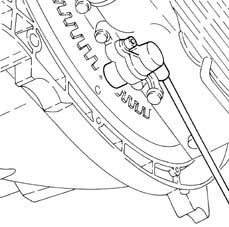
Operation
The passage from full to empty, due to the presence or absence of the tooth, causes a variation in the magnetic flow which is sufficient to generate an induced alternating voltage, resulting from the count of teeth located on a ring (or phonic wheel).
The frequency and range of the voltage sent to the electronic control unit provides it with the crankshaft angular speed.
1, Brass bush 2, Permanent magnet 3, Plastic sensor casing 4, Coil winding 5, Polar core 6, Toothed or phonic wheel 7, Coaxial two-wire cable or electrical connection
The specified gap for obtaining correct signals, between the end of the sensor and the phonic wheel, must be between 0.8 and 1.5 mm.
This gap is not adjustable, so if a value outside the tolerance range is measured, check the condition of the sensor and the phonic wheel.
1, Maximum magnetic flow 2, Minimum magnetic flow 3, Trend of induced alternating voltage
For operating checks 1056B multi-point injection system (mpi) .
Timing sensor
Hall effect, it is fitted on the right cylinder head "facing" the disc on the rear of the exhaust camshaft for the right cylinder head.
The disc contains a peg which allows the sensor to signal the engine timing position.
The fuel injection control unit uses the timing sensor's signal to find out the TDC at the end of compression.
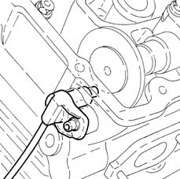
Operation
A semiconducting layer, through which current passes, immersed in a perpendicular magnetic field (force lines perpendicular to the current direction), generates at its ends a difference in potential known as Hall voltage.
Whilst the disc (1) rotates, when the tooth (3) passes over the sensor (2), it blocks the magnetic field with a consequent "low" output signal.
Conversely, after the tooth (3) passes the sensor (2), the signal becomes "high".
Consequently the high signal alternates with the low signal every two engine revolutions, to be precise when cylinder no. 1 is 58° before TDC.
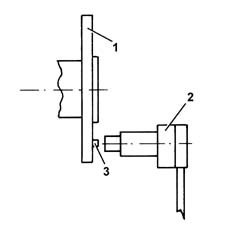
1, Camshaft disc 2, Timing sensor 3, Tooth
Accelerator pedal potentiometer
The accelerator pedal is fitted with two integrated potentiometers:
- one main
- one safety.
The injection control unit implements the following "recovery" strategies
- if there is a fault with one of the two potentiometers, a throttle opening of up to 40° is allowed for a long period
- if both of the potentiometers fail completely, the throttle opening is excluded.
The accelerator pedal is adjusted by excluding the end of travel (this position should not be exceeded).
Operation
The sensor consists of a casing (1), fixed to the pedals by a flange, which contains a shaft (2), in an axial position, connected to the two potentiometers (3).
There is a coil spring on the shaft which guarantees the correct resistance to the pressure whilst a second spring ensures the return on release.
Operating range from 0° to 70°; mechanical cut out at 88°.
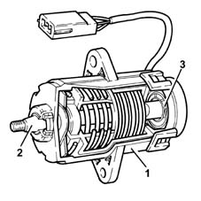
For operating checks 1056B multi-point injection system (mpi) .
THROTTLE BODY INTEGRAL WITH D.V.E.
It is fitted on the inlet chamber and regulates the quantity of air drawn in by the engine.
According to the signal coming from the accelerator pedal potentioemter, the injection control unit controls the opening of the butterfly by mens of a direct current motor integrated in the butterfly casing integrated with D.V.L.
Throttle opening takes place between 0° and 80° therefore including the idle adjustment.
The throttle body integral with D.V.E. is equipped with two potentiometers integrated so that one controls the other and viceversa.
If both the potentiometers fail or there is no supply, depending on the position of the accelerator pedal, the control unit reduces the drive torque:
- fully depressed, it cuts off the supply to one or more pistons, until a maximum speed of 2500 rpm is reached.
- in intermediate positions, it cuts off the supply to one or more pistons, until a speed below 2500 rpm is reached.
If the throttle body integral with D.V.E. or injection control unit is replaced, the "self-learning" procedure must be carried out. 1056B81 run electronic ignition/injection control unit (single) self-learning procedure
For operating checks 1056B multi-point injection system (mpi) .
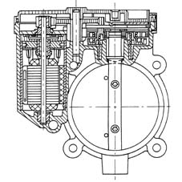
Air flow meter
The flow meter is located on the air inlet duct and is of the "hot film" type.
The intake air temperature sensor is built into the flow meter.
1, Covers 2, Electronic card 3, Sensor 4, Support plate 5, Support 6, O-ring 7, Temperature sensor
Operation
The principle of operation is based on a heated diaphragm located in a measuring duct through which the intake air entering the engine flows.
The hot film diaphragm is kept at a constant temperature (about 120° C above the incoming air temperature) by the heating resistor.
The air mass passing through the measuring duct tends to draw heat from the diaphragm, so to keep the latter at a constant temperature, some current must flow through the resistor.
This current is measured by a suitable Wheatstone bridge.
The current is therefore proportional to the mass of flowing air.
The flow meter directly measures the air mass (not volume), thus eliminating problems of temperature, altitude, pressure, etc.
For operating checks 1056B multi-point injection system (mpi) .
Applies to: engines: 2.5 V6; all production periods; only with equipment: Euro 3
CONSTRUCTION FEATURES
View of assembly
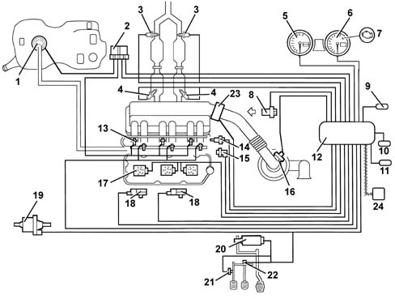
1, Electric fuel pump 2, Relays 3, Lambda sensors downstream of catalyzer 4, Lambda sensors upstream of pre-catalyzer 5, Speedometer 6, Rev counter 7, Engine Check warning light 8, Timing sensor 9, Climate control connector 10, Diagnostic connector 11, Alfa Romeo CODE connector 12, Injection/ignition control unit 13, Injectors 14, Coolant temperature sensor 15, Rpm sensor 16, Air flow meter with air temperature sensor 17, Ignition coils 18, Detonation sensors 19, Fuel vapour recirculation solenoid valve 20, Accelerator pedal potentiometer 21, Clutch pedal switch 22, Brake pedal switch 23, Throttle body actuator integrated with D.V.L. 24, CAN line
ME3.1 injection/ignition control unit
The control unit is fitted in the engine compartment, on the intake chamber.
The control unit memory is the 'flash EPROM' type, i.e. reprogrammable from the outside without intervening on the hardware.
The replacement of the injection control unit or the integrated throttle body means that the self-learning procedure has to be carried out.
PINS
A1, Not connected A2, Fuel vapour solenoid valve operation A3, Alfa Romeo CODE connection A4, Not connected A5, Gear selector (auto. trans. only) A6, Compressor engagement request A7, Power supply for accelerator pedal potentiometer A8, Signal for potentiometer - 1 accelerator pedal A9, Quadrinary - Fan 1st speed request A10, Not connected A11, Automatic transmission version code A12, CAN-L line A13, Compressor relay control A14, Not connected A15, Direct supply A16, Supply controlled by ignition, via main relay A17, Not connected A18, Not connected A19, Engine coolant overheating warning light A20, Preparation for Flash Programming A21, Not connected A22, Fuel level sensor A23, Not connected A24, Earth for potentiometer - 1 accelerator pedal A25, Earth for potentiometer - 2 accelerator pedal A26, Brake lights switch A27, Brake lights switch A28, SPORT function switch A29, CAN-H line A31, Fuel pump relay feed A31, Main relay activation A32, Supply controlled by ignition, via main relay A33, Not connected A34, SPORT function warning light A35, Rev counter signal A36, Not connected A37, Not connected A38, Signal from air conditioner A39, Not connected A40, Signal for potentiometer - 2 accelerator pedal A41, Quadrinary - fan 2nd speed request A42, Cruise Control Resume A43, Not connected A44, Speedometer sensor signal A45, CAN-H line A46, Injection warning light A47, Supply controlled by ignition A48, Supply controlled by ignition, via main relay A49, Not connected A50, Operation of fan 1st speed A51, Not connected A52, Fuel consumption signal A53, Diagnostic connection (K line) A54, Air temperature sensor signal A55, Not connected A56, Supply for accelerator pedal potentiometer A57, Air flow meter signal A58, Not connected A59, Clutch pedal switch A60, Oil pressure switch A61, CAN-L line A62, Operation of fan 2nd speed A63, Air flow meter supply A64, Not connected B1, Throttle body motor earth B2, Lambda sensor heating (pre-cat. 2) (front bank) B3, Operation of injector for cyl. 2 B4, Not connected B5, Not connected B6, Detonation sensor 2 reference earth B7, Lambda sensor earth (pre-cat. 2) B8, Not connected B9, Not connected B10, Engine rpm sensor B11, Not connected B12, Lambda sensor earth (post-cat. 2) B13, Not connected B14, Cylinder 3 coil operation B15, Cylinder 2 coil operation B16, Cylinder 1 coil operation B17, Throttle body motor supply B18, Lambda sensor heater (post-cat. 2) B19, Operation of injector for cyl. 1 B20, Operation of injector for cyl. 3 B21, Not connected B22, Detonation sensor 1 B23, Lambda sensor signal (pre-cat. 1) (rear bank) B24, Potentiometer - 1 throttle body B25, Engine coolant temperature B26, Sensors reference earth B27, Not connected B28, Lambda sensor signal (post-cat. 1) B29, Not connected B30, Cylinder 6 coil operation B31, Cylinder 5 coil operation B32, Cylinder 4 coil operation B33, Throttle body motor earth B34, Lambda sensor heater (pre-cat. 1) B35, Operation of injector for cyl. 4 B36, Operation of injector for cyl. 6 B37, Operation of EGR solenoid valve (preparation) B38, Detonation sensor 2 B39, Lambda sensor signal (pre-cat. 2) (front bank) B40, Potentiometer - 2 throttle body B41, Not connected B42, Timing sensor signal B43, Not connected B44, Lambda sensor signal (post-cat. 2) B45, Not connected B46, Not connected B47, Not connected B48, Not connected B49, Throttle body motor supply B50, Lambda sensor heater (post-cat. 1) B51, Not connected B52, Operation of injector for cyl. 5 B53, Not connected B54, Detonation sensor 1 reference earth B55, Lambda sensor earth (pre-cat. 1) B56, Not connected B57, Not connected B58, Throttle body potentiometers supply B59, Engine rpm sensor B60, Lambda sensor earth (post-cat. 1) B62, Not connected B63, Not connected B64, Not connected NOTE: For the remaining components, refer to the ME2.1 injection/ignition system.
Applies to: engines: 3.2 V6; all production periods
CONSTRUCTION FEATURES
View of assembly
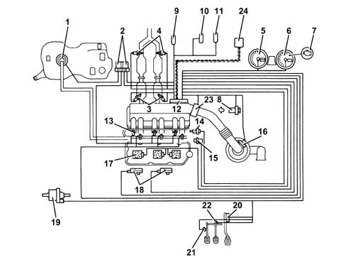
1 - Electric fuel pump 2 - Relays 3 - Lambda sensors upstream of catalytic preconverters 4 - Lambda sensors downstream of catalytic preconverters 5 - Speedometer 6 - Rev counter 7 - Engine Check warning light 8 - Timing sensor 9 - Climate control connector 10 - Diagnostic connector 11 - Alfa Romeo CODE connector 12 - Injection/ignition control unit 13 - Injectors 14 - Coolant temperature sensor 15 - Rpm sensor 16 - Air flow meter with air temperature sensor 17 - Ignition coils 18 - Knock sensors 19 - Fuel vapour recirculation solenoid valve 20 - Accelerator pedal with built-in potentiometer. 21 - Clutch pedal switch 22 - Brake pedal switch 23 - Throttle body integral with D.V.L. 24 - CAN line
ME7.3.1 injection/ignition control unit
The control unit is fitted in the engine compartment, on the intake chamber.
The control unit memory is the 'flash EPROM' type, i.e. reprogrammable from the outside without intervening on the hardware.
The adoption of the Alfa Romeo CODE does not allow control units to be exchanged between vehicles.
The control unit implements the self-learning mode in the following conditions:
- installation of new injection control unit,
- installation of a new throttle body actuator integratd with D.V.L.
- removing/refitting or replacement of rpm sensor/phonic wheel, for recognizing misfire.
PIN-OUT
F1 - Not connected F2 - Fuel vapour recovery solenoid control F3 - Alfa Romeo CODE connection F4 - Not connected F5 - Not connected F6 - Compressor engagement request F7 - Supply for accelerator pedal potentiometer F8 - Signal for potentiometer - 1 accelerator pedal F9 - Quadrinary - Fan 1st speed request F10 - Cruise Control ON/OFF F11 - Not connected F12 - CAN-L line F13 - Compressor relay control F14 - Not connected F15 - Direct power supply F16 - Ignition-operated power supply, via main relay F17 - Not connected F18 - Cruise Control warning light F19 - Engine coolant overheating warning light F20 - Preparation for Flash Programming F21 - Not connected F22 - Fuel level sensor F23 - Not connected F24 - Earth for potentiometer - 1 accelerator pedal F25 - Earth for potentiometer - 2 accelerator pedal F26 - Brake lights switch F27 - Brake lights F28 - Not connected F29 - CAN -H line F30 - Fuel pump relay control F31 - Main relay activation F32 - Ignition-operated power supply, via main relay F33 - Not connected F34 - Engine coolant warning light F35 - Rev counter signal F36 - Not connected F37 - Not connected F38 - Not connected F39 - Not connected F40 - Signal for potentiometer - 2 accelerator pedal F41 - Quadrinary - fan 2nd speed request F42 - Cruise Control Resume F43 - Cruise Control SET + F44 - Not connected F45 - Not connected F46 - Injection warning light A47 - +15 ignition-operated power supply A48 - Supply controlled by ignition, via main relay F49 - Not connected F50 - Fan 1st speed control F51 - Not connected A52 - Fuel consumption signal F53 - Diagnostic connection (K line) F54 - Air temperature sensor signal F55 - Not connected F56 - Supply for accelerator pedal potentiometer F57- Air flow meter signal F58 - Cruise Control SET - F59 - Switch on clutch pedal F60 - Not connected F61 - Not connected F62 - Fan 2nd speed control F63 - Air flow meter supply F64 - Not connected M1 - - Throttle body motor earth M1 - Lambda sensor heater (pre-cat. 2) M3 - Operation of injector for cyl. 2 M4 - Not connected M5 - Not connected M6 - Knock sensor reference earth 2 M7 - Lambda sensor reference earth 2) M8 - Not connected M9 - Not connected M10 - Engine RPM sensor M11 - Not connected M12 - Lambda sensor reference earth (post-cat 2) M13 - Not connected M14 - Cylinder 3 coil operation M15 - Cylinder 2 coil operation M16 - Cylinder 1 coil operation M17 - Throttle body motor supply M18 - Lambda sensor heater (post-cat. 2) M19 - Operation of injector for cyl. 1 M20 - Operation of injector for cyl. 3 M21 - Not connected M22 - Knock sensor 1 M23 - Lambda sensor signal (pre-cat. 1) M24 - Potentiometer - 1 throttle body M25 - Engine coolant temperature M26 - Sensors reference earth M27 - Not connected M28 - Lambda sensor signal (post-cat. 1) M29 - Not connected M30 - Cylinder 6 coil operation M31 - Cylinder 5 coil operation M32 - Cylinder 4 coil operation M33 - Throttle body motor earth M34 - Lambda sensor heater (pre-cat 1) M35 - Operation of injector for cyl. 4 M36 - Operation of injector for cyl. 6 M37 - Not connected M38 - Knock sensor 2 M39 - Lambda sensor signal (pre-cat. 2) M40 - Throttle body potentiometer 2 M41 - Not connected M42 - Timing sensor signal M43 - Not connected M44 - Lambda sensor signal (post-cat. 2) M45 - Not connected M46 - Not connected M47 - Not connected M48 - Not connected M49 - Throttle body motor supply M50 - Lambda sensor heater (post-cat. 1) M51 - Not connected M52 - Operation of injector for cyl. 5 M53 - Not connected M54 - Knock sensor 1 reference earth M55 - Lambda sensor reference earth 1) M56 - Not connected M57 - Not connected M58 - Throttle body potentiometer supply M59 - Engine rpm sensor M60 - Lambda sensor reference earth (post-cat. 1) M61 - Not connected M62 - Not connected M63 - Not connected M64 - Not connected
INJECTORS
The single-jet fuel injectors are installed on the distribution manifold and are pressed by the manifold itself into their respective seats in the inlet ducts.
A retainer secures the fuel injector to the distribution manifold, and two O-rings ensure the seal.
The fuel injectors are responsible for delivering the necessary quantity of fuel to the engine.
They are 'all or nothing' devices, as they can remain in only two stable states, i.e. open or closed. They allow fuel to pass when they are open, while they block delivery when they are closed.
Operation
They basically consist of a nozzle controlled by a solenoid and a return spring (4).
In the rest position, the pintle (2), which is joined to the core (3), is pushed by the spring onto the injector nose (6), thus closing the hole, ensuring a seal and preventing the undesired emergence of fuel.
As soon as the winding (5) is energized, the core is attracted, and it compresses the spring thus opening the hole of the nozzle and allowing fuel to emerge.
Considering the physical characteristics of the fuel (viscosity, density) and the pressure drop (via the pressure regulator) to be constant, the quantity of fuel injected depends only on the fuel injector opening time.
The winding energization time is normally indicated as 'fuel injection time'.
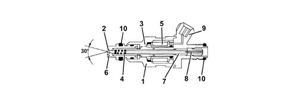
1 - Injector case 2 - Pintle 3 - Magnetic core 4 - Coil spring 5 - Winding 6 - Injector nose 7 - Adjustable spring loader 8 - Filter 9 - Electrical connection 10 - Sealing ring
ENIGINE COOLANT TEMPERATURE SENSOR
It is fitted on the thermostatic cup and measures the temperature of the coolant by means of an NTC thermistor which has a negative resistance coefficient.
The sensor is produced using semiconductor technology, so if the temperature of the sensor increases as the temperature of the coolant increases, the resistance decreases.
As the variation in resistance is not linear, for the same temperature increment, it is higher for low temperatures than for high temperatures.
KNOCK SENSORS
The piezoelectric type detonation sensors are fitted on the cylinder block/crankcase, between the two heads, and measure the intensity of the vibrations caused by the detonation in the combustion chambers.
The piezoelectric crystal forming the sensor detects the vibrations generated at a frequency of between 12 and 16 kHz, and transforms them into electrical signals sent to the fuel injection control unit.
RPM SENSOR
It is fitted on the engine block, where it faces the phonic wheel located on the flywheel.
It is of the inductive type, i.e. it functions by means of the variation in the magnetic field generated by the passage of the teeth of the flywheel (60-2 teeth).
The engine management control unit uses the rpm sensor to:
- determine the rotation speed;
- determine the angle of the crankshaft.
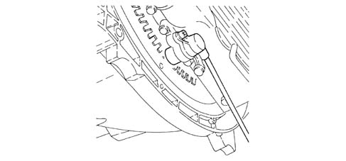
Operation
The passage from full to empty, due to the presence or absence of the tooth, causes a variation in the magnetic flow which is sufficient to generate an induced alternating voltage, resulting from the count of teeth located on a ring (or phonic wheel).
The frequency and amplitude of the voltage sent to the electronic control unit give the latter the measurement of the speed of the front wheels.
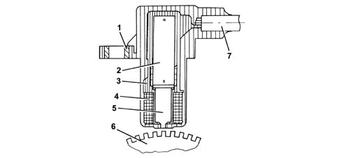
1 - Brass bush 2 - Permanent magnet 3 - Plastic sensor casing 4 - Coil winding 5 - Polar core 6 - Phonic wheel 7 - Two-wire coaxial cable
The distance (gap) for obtaining correct signals, between the end of the sensor and the flywheel, should be between 0.8 and 1.5 mm.
This gap is not adjustable, so if a value outside the tolerance range is measured, check the condition of the sensor and the phonic wheel.
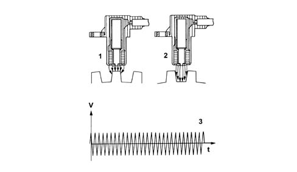
1 - Maximum magnetic flow 2 - Minimum magnetic flow 3 - Induced alternating voltage trend
TIMING SENSOR
Hall effect; it is mounted on the cylinder head and faces a disc on the rear part of the right cylinder head exhaust end camshaft.
The disc contains a peg which allows the sensor to signal the engine timing position.
The engine control unit uses the timing sensor signal for recognizing T.D.C. at the end of compression for a quick start.
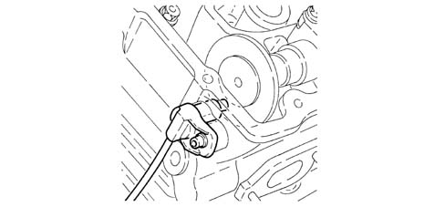
Operation
A semiconducting layer, through which current passes, immersed in a perpendicular magnetic field (force lines perpendicular to the current direction), generates at its ends a difference in potential known as Hall voltage.
Whilst the disc (1) rotates, when the tooth (3) passes over the sensor (2), it blocks the magnetic field with a consequent 'low' output signal.
Conversely, after the tooth (3) passes the sensor (2), the signal becomes 'high'.
Consequently the high signal alternates with the low signal every two engine revolutions, to be precise when cylinder no. 1 is 58° before TDC.
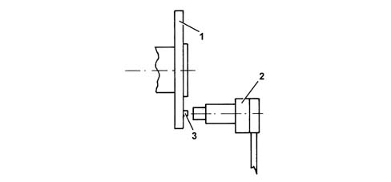
1 - Camshaft disc 2 -Timing sensor 3 - Tooth
ACCELERATOR PEDAL WITH BUILT-IN POTENTIOMETER
The sensor consists of a casing, secured to the accelerator pedal mount, which contains a shaft, in an axial position, connected to two potentiometers: one main one and one safety one.
The engine control unit implements the following recovery strategies:
- if there is a fault with one of the two potentiometers, a throttle opening of up to 25% is allowed for a long period
- if both of the potentiometers fail completely, or one potentiometer and the brake pedal switch fail, the throttle opening is excluded.
There is a coil spring on the shaft which guarantees the correct resistance to the pressure whilst a second spring ensures the return on release.
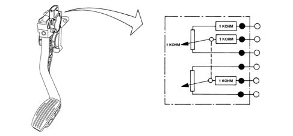
Operation
The position of the accelerator pedal is transformed into an electrical voltage signal and is sent to the fuel injection control unit by the potentiometer connected to the accelerator pedal.
The accelerator pedal position signal is processed together with the information relating to the rpm, to obtain the fuel injection times and relevant pressure.
THROTTLE BODY WITH DVL
It is fitted on the inlet chamber and regulates the quantity of air drawn in by the engine.
According to the signal coming from the accelerator pedal potentiometer, the injection control unit controls the opening of the throttle by means of a direct current motor integrated in the throttle body integrated with D.V.L.
The throttle opening takes place between 0° and 80° therefore including the idle adjustment.
The throttle body integral with D.V.L. is equipped with two potentiometers integrated so that one controls the other and viceversa.
If both the potentiometers fail or there is no supply, the control unit reduces the engine torque according to the position of the accelerator pedal:
- fully depressed, it cuts off the supply to one or more pistons, until a maximum speed of 2500 rpm is reached.
- in intermediate positions, it cuts off the supply to one or more pistons, until a speed below 2500 rpm is reached.
If the throttle body integrated with D.V.L. or the injection control unit or the air chamber is replaced then the self-learning procedure must be carried out.
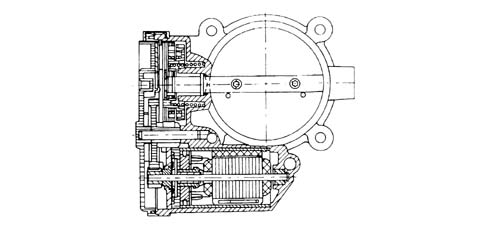
Air flow meter
The flow meter is located on the air inlet duct and is of the 'hot film' type.
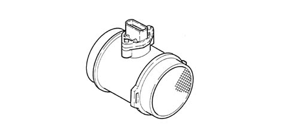
The intake air temperature sensor is built into the flow meter.
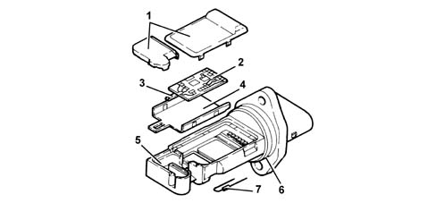
1 - Covers 2 - Electronic card 3 - Sensor 4 - Support plate 5 - Support 6 - O-ring 7 - Temperature sensor
Operation
The operating principle is based on a heated diaphragm located in a measuring duct through which the intake air entering the engine flows.
The hot film diaphragm is kept at a constant temperature (about 120° C above the incoming air temperature) by the heating coils.
The air mass passing through the measuring duct tends to draw heat from the diaphragm, so to keep the latter at a constant temperature, some current must flow through the resistor.
This current is measured by a suitable Wheatstone bridge.
The current is therefore proportional to the mass of flowing air.
The flow meter directly measures the air mass (not volume), thus eliminating problems of temperature, altitude, pressure, etc.